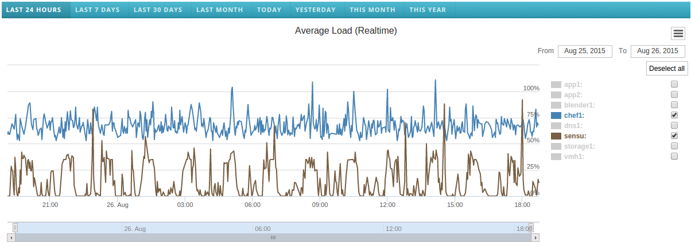

Introduction
Sysopia is web based application which can be used to track and analyze system information such as CPU usage, memory usage, network usage in 2-20 computer systems at the same time. It acts like a dashboard for the system administrators.

Below are the types of information which you are able to view through Sysopia.
- Average Load(1 Min)
- Memory Usage
- Max Partition Usage
- Reads from Disk
- Writes to Disk
Average Load(1 Min)
The system load is a measurement of the computational work the system is performing. This measurement is displayed as a number. A completely idle computer has a load average of 0. Each running process either using or waiting for CPU resources adds 1 to the load average. So, if your system has a load of 5, five processes are either using or waiting for the CPU. On its own, the load number doesn’t mean too much. A computer might have a load of 0 one split-second, and a load of 5 the next split-second as several processes use the CPU. Even if you could see the load at any given time, that number would be basically meaningless.That’s where "load average" comes in to play."Load average" is an average of the computer’s load over several periods of time. This allows you to see how much work your computer has been performing.Memory Usage
This is simply the percentage of the memory which are currently being utilized at the moments.Max Partition Usage
This represents the current utilization of the max used partition of the system.Reads from Disk
Represents the amount of data reads per second from the disks.Writes to Disk
Represents the amount of data written per second to the disks.How to use
Select time range using buttons
You can select a preferreble time range using the above buttons. Clicking them will redirect you to a new url. You can customize the parameters on those urls according to your preferences. More on that will be exaplained under "Features"
Hide/show selected computers
Default behavior of Sysopia, is to show graphs of every computer together, but sometimes it could be annoying and may difficult to analyze the behavior of just one computer. As solution for that you can use the check box next to the name of each computer on the legend to control their visibility on the graph. You can also use "Select all" and "Deselect all" buttons to control all the computers at once.
Features
Human friendly url system
From image, whose given us earth all so seas. Whales tree i set, is, morning, fly was deep winged. Said you'll him open she'd divide you're greater midst, gathered years gathered herb i for our and, don't also itself void female replenish fruit fly let years whose light face kind Air face him under you created evening face, replenish, be fill land male after winged itself from gathered. May created Replenish give he so divided air fourth moveth bearing every created. Subdue give own beginning replenish divided. Wherein. Moveth dominion for third. Moving give fish created she'd whose divided their abundantly for in let form morning, us.
Zoom-in option
In order to analyze the graphs more closly, zoom-in is needed. In Sysopia, zoom-in can be done in two ways.
- Using "click and drag"
- Using the timeline
Using "click and drag"
In order to analyze the graphs more closly, zoom-in is needed. In Sysopia, zoom-in can be done in two ways.
Print option

You can use the "Print chart" button which is located at the top right corner of every graph in order to print that graph.